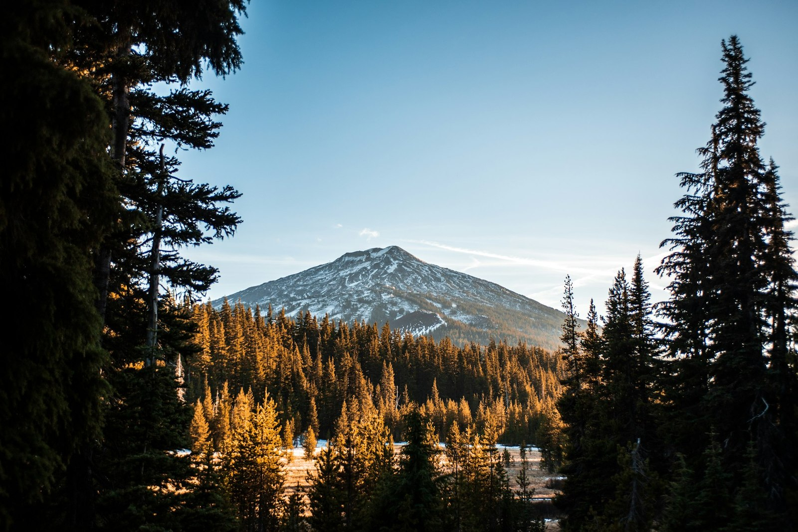
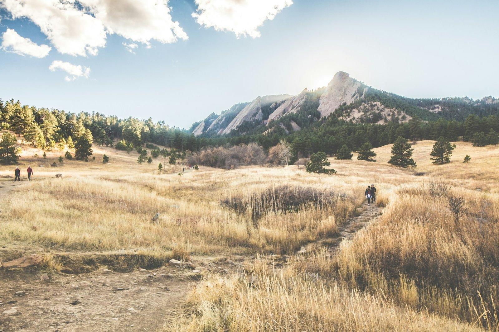

Mountain West · Head-to-Head
Bend or Boulder?
America's two flagship outdoor retirements, about 1,200 miles apart, with essentially identical climate scores, both perfect 10s for outdoor recreation, and a $238,000 cost gap that buys a town, not a different climate or a different mountain. Here is the honest version of the choice.
The short version
Choose Boulder for the urban-culture version of the outdoor retirement: a perfect 10 for outdoor recreation wrapped around a college town with Pearl Street, AARP's Top 100 recognition (#6 large community, 2025), a community-and-culture score of 9 against Bend's 7, walkability of 8 against 7, and Denver International 45 minutes away. Choose Bend for the same perfect 10 outdoor product at $238,000 less, with $3,400 a year off the insurance estimate, better healthcare (8 vs. 7 of 10, behind St. Charles Medical Center), and better safety (8 vs. 7), in a smaller high-desert city where the lakes, rivers, and Cascade access are the entire point. The catch is shared and identical: both score 4 of 10 for climate resilience, both because of worsening wildfire and smoke seasons. This is a tradeoff between two characters, not between a safer and a riskier retirement.
The scored comparison
Both cities pulled from the same database, scored the same way. The pattern: Boulder takes the urban-amenity rows (community, walk, airport, wellness, tax). Bend takes every money row, plus healthcare and safety. Climate and outdoor recreation are essentially tied.
| Metric | Bend OREGON | Boulder COLORADO |
|---|---|---|
| Cost & money | ||
| Typical home value | $726,000 ✓ | $964,000 |
| Estimated retiree budget | $6,900–$8,500/mo ✓ | $8,000–$9,900/mo |
| Budget tier (1 = least expensive) | 4 of 5 | 4 of 5 |
| Property tax rate | 0.81% | 0.50% ✓ |
| Home insurance estimate | $1,572/yr ✓ | $4,963/yr |
| Our 10-dimension scores | ||
| D1 Airport access | 6/10 | 8/10 ✓ |
| D2 Budget | 4/10 ✓ | 3/10 |
| D3 Healthcare | 8/10 ✓ | 7/10 |
| D4 Climate resilience & insurance | 4/10 | 4/10 |
| D5 Tax friendliness | 6/10 | 7/10 ✓ |
| D6 Walkability | 7/10 | 8/10 ✓ |
| D7 Outdoor recreation | 10/10 | 10/10 |
| D8 Active wellness | 7/10 | 8/10 ✓ |
| D9 Safety | 8/10 ✓ | 7/10 |
| D10 Community & culture | 7/10 | 9/10 ✓ |
| Climate (essentially identical) | ||
| Winters | Real four-season, dry, sunny | Real four-season, dry, sunny |
| Summer heat severity (10 = worst) | 4/10, mild at altitude | 4/10, mild at altitude |
| Summer humidity (10 = worst) | 3/10, dry | 3/10, dry |
| Year-round mildness | 9/10 | 9/10 |
Scored 0–10 against the 100 cities in our database; higher is better (except where noted). Checkmarks mark the stronger city in each row; ties and near-ties are left unmarked. Data: RetireMeHere city database, June 2026.
The five tradeoffs that actually decide it
1. What they share is more than you would expect, including the catch.
This is the lede most readers don't see coming. The climate scores are essentially tied: summer heat severity 4 of 10 in both, humidity 3 of 10 in both, year-round mildness 9 of 10 in both, warm-winter scores 5 of 10 in both (real winter with snow). Outdoor recreation is tied at a perfect 10. Climate resilience is tied at 4 of 10. Both cities are dry, sunny ("300 sunny days" each in our database), and sit at altitude (Bend around 3,600 ft, Boulder around 5,400 ft). The shared catch is also identical: wildfire, smoke, drought, worsening, in both database notes. This pair isn't about choosing a different climate or a different outdoor product. It's about choosing at one of two price points, attached to one of two characters.
2. $238,000 plus $3,400 a year: the price tag and the insurance tag together.
Boulder's typical home is $964,000 against Bend's $726,000, with monthly retiree budgets running roughly $1,100 to $1,400 apart ($8,000–$9,900 against $6,900–$8,500). Both sit in budget tier 4 of 5. The more striking number is insurance: $4,963 a year in Boulder against $1,572 in Bend, a 3.2x gap on tied climate-resilience scores (both 4 of 10). The reason is Boulder's wildfire-urban interface and the Marshall Fire of December 2021, which destroyed more than 1,000 homes in the immediate Boulder County area and is named in our database's resilience rationale. Over a 25-year retirement, the insurance differential alone is roughly $85,000, repeating annually on top of the price gap. Property tax modestly favors Boulder (0.50% against 0.81%), but on a meaningfully more expensive home.
3. What the cost gap actually buys: not the mountains, not the climate, the town.
The premium is paying for the town wrapped around the outdoor access, not for more or better outdoors. Boulder's community-and-culture score is 9 of 10 against Bend's 7, behind Pearl Street's pedestrian mall, the cultural and food scene our database calls vibrant, and AARP's Top 100 Places to Live for Older Adults, where Boulder is ranked the #6 large community in 2025. Walkability is 8 against 7, unusual for a mountain-adjacent city. Airport access is 8 against 6, with Denver International 45 minutes away against Bend's smaller Redmond Municipal regional service. The research-institute density of CU plus NIST, NCAR, and NOAA gives Boulder a cultural and intellectual depth most outdoor towns simply don't carry. Bend is a smaller high-desert city wrapped around the same mountain access; Boulder is a college town wrapped around it. The premium buys the town.
4. Healthcare and safety quietly flip toward Bend.
The countertrend most "Boulder is better" narratives miss. Bend takes healthcare 8 against 7, anchored by St. Charles Medical Center, which our database notes as excellent for a city of its size, with a strong specialty bench for a non-metro region. Bend takes safety 8 against 7. Neither gap is enormous, but they're two dimensions retirees often weight most, and the cheaper city wins both. Active wellness modestly favors Boulder (8 against 7), reflecting the spa-yoga-fitness economy a college town supports; our database notes Boulder as the country's fitness archetype, and the city ranks #1 on our Top Cities for Active Retirees list. Tax friendliness modestly favors Boulder too (7 against 6) on Colorado's flat 4.4% income tax and post-65 Social Security exemption against Oregon's 8.75% top bracket and no SS exemption.
5. Two altitudes, two characters: pick the texture, not the climate.
Bend at 3,600 ft is high desert: smaller, organized around the Deschutes River and the Cascade Lakes, Pacific-Northwest-tinged but dry, retiree-and-family-skewing, the kind of place ranked #1 on our Top Cities for Hikers list (9.2 out of 10, ahead of Boulder's 8.7). Boulder at 5,400 ft is foothill front range: CU undergraduate energy mixed with research-institute density, Pearl Street's foot traffic, the Flatirons as backdrop, and the cultural depth a half-century-old open-space program attracts (45,000 acres of community-funded protected open space since 1967, noted in our database). Same outdoor access, with the trails close to the door in both. Very different daily life around it. Retirees rarely agonize between these once they've spent a week in each; the towns sort people honestly.
Go deeper on each city
Full editorial profiles: neighborhoods, healthcare, a typical week, and the honest fit lists.

The high-desert outdoor city: #1 on our Top Cities for Hikers list, a perfect 10 outdoor product, St. Charles Medical, and $1,572-a-year insurance, examined honestly.
Read the Bend profile →
The college-town outdoor city: AARP Top 100 #6 large community (2025), #1 on our Top Cities for Active Retirees list, Pearl Street, and the Marshall Fire ledger.
Read the Boulder profile →Bend vs. Boulder: the questions people actually ask
Is Bend or Boulder better for retirement?
It depends on whether you want a college-town overlay on your mountain access or a smaller, nature-pure version of the same outdoors. Boulder wins community and culture (9 vs. 7 of 10, behind Pearl Street and AARP Top 100 recognition as the #6 large community in 2025), walkability (8 vs. 7), airport access (8 vs. 6, with Denver International 45 minutes away), active wellness (8 vs. 7, the country's fitness archetype per our database), and tax friendliness (7 vs. 6). Bend wins typical home price ($238,000 less), home insurance ($3,400 less per year), healthcare (8 vs. 7, behind St. Charles Medical), and safety (8 vs. 7). Climate and outdoor recreation are essentially tied: both perfect 10s on outdoors, both 4 of 10 on heat severity, both 3 of 10 on humidity, both 9 of 10 on year-round mildness.
How much cheaper is Bend than Boulder?
About $238,000 on the typical home, roughly 25% less. Bend's typical home is $726,000 against Boulder's $964,000, with monthly retiree budgets running $1,100 to $1,400 a month lower ($6,900–$8,500 vs. $8,000–$9,900). The more striking number is insurance: Bend's home insurance estimate is $1,572 a year against Boulder's $4,963 a year, a 3.2x gap. Over a 25-year retirement, the insurance differential alone is roughly $85,000. Property tax modestly favors Boulder (0.50% vs. 0.81%), but on a more expensive home.
Why is Boulder's home insurance so much higher than Bend's?
Boulder sits in a wildfire-urban interface that insurers price aggressively. The Marshall Fire of December 2021 destroyed more than 1,000 homes in the immediate Boulder County area, and that risk profile shapes both base rates and surcharges in foothill zip codes. Bend carries wildfire and smoke risk too, both cities score 4 of 10 on our climate-resilience scale, but Bend's high-desert geography puts homes farther from interface fuels, and Oregon's insurance market hasn't repriced as sharply. The result is identical resilience scores but very different premiums.
Is healthcare better in Bend or Boulder?
Bend, by one point on our scale (8 vs. 7 of 10). Bend is anchored by St. Charles Medical Center, noted in our database as excellent for a city of its size, with a strong specialty bench for a non-metro region. Boulder is served by Boulder Community Health and is within easy reach of Denver-Aurora's academic medical centers (UCHealth, National Jewish), which broadens options for complex care but doesn't move the citywide score. For routine and most specialty care, Bend's local depth is the slight edge.
What is the climate like in Bend vs. Boulder?
Essentially identical on every dimension we score. Both cities sit at altitude (Bend around 3,600 ft, Boulder around 5,400 ft) with dry, sunny weather and a four-season year. Summer heat severity scores 4 of 10 in both. Humidity scores 3 of 10 in both. Year-round mildness scores 9 of 10 in both. Warm-winter scores 5 of 10 in both, reflecting real winter with snow and freezing nights. The shared catch is also the same: wildfire and smoke seasons, worsening, in both database notes. This isn't a pair where you choose a different climate; you choose at one of two price points.
More city matchups
Still deciding?